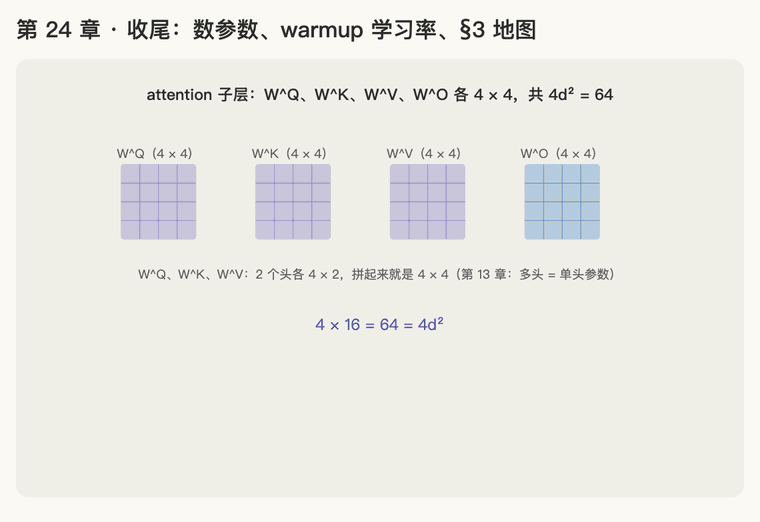

第 24 章 · 收尾：数参数、warmup 学习率、对照原文通读 §3
本章回答：一个 Transformer 一共有多少个要学的数（参数），都在哪？论文训练时学习率为什么先升后降？学完 24 章，怎么把 §3 原文从头到尾读一遍？
讲解日期：2026-11-08 起 · 上一章：第 23 章 复杂度 · 下一章：无，本书到此结束；续篇是《超越原版 Transformer》
对应原文：materials/text/papers/attention-is-all-you-need-1706.03762.txt§3 全部 L110–L298；Table 3 base 一行 L451–L454；§5.3 Optimizer L363–L376
本章缩写：参数（parameter：模型里要靠训练学出来的数，比如 \(W^Q\)、FFN 的 \(W_1\)、embedding 表 E 里的每一个数）；bias（偏置：矩阵乘完以后再加上的那串数 b）；LN = LayerNorm（层归一化，参数是 γ、β）；M = million（百万：65M = 6500 万）；lr = learning rate（学习 / 率：每一步调参数时迈多大的步子）；step（训练的第几步）；warmup（热身：训练刚开始时学习率从小慢慢升上去）；Adam = Adaptive Moment Estimation（自适应 / 矩 / 估计：论文用的优化器，负责"每个参数往哪调、调多少"）；\(d_{model}\)、\(d_{ff}\)、\(d_k\)、h、N：见第 13、20、21 章；代码里的名字（PyTorch、nn.Linear等）见附录"PyTorch 对照"。全部缩写见 附录 · 缩写与术语表
讲解
第一步：数参数：每层 attention 4d²、FFN 2·d·d_ff，再加一张 embedding 表（2026-11-08）
参数就是模型里所有"靠训练学出来"的数。数参数就像清点一套家具用了多少块木板：按零件分开数，最后加起来。
规则：忽略 bias 和 LayerNorm 的 γ、β（它们只有几百几千个，和动辄几十万的矩阵比可以不计）。位置编码用的是固定的 sin、cos（第 16 章），没有参数。
零件 ①：一个 attention 子层 = \(4 d_{model}^2\)。
- 每个头有 \(W^Q_i, W^K_i, W^V_i\) 三个矩阵，各 \(d_{model} \times d_k\)；h 个头一共 \(3 \cdot h \cdot d_{model} \cdot d_k\)。因为 \(h \cdot d_k = d_{model}\)（L219），这就是 \(3 d_{model}^2\)；
- 再加最后合并用的 \(W^O\)（\(h d_v \times d_{model}\) = \(d_{model} \times d_{model}\)，L217）：\(d_{model}^2\)；
- 合计 \(4 d_{model}^2\)。第 13 章说过：多头和单头参数一样多，只是切成几份。
零件 ②：一个 FFN 子层 = \(2 \cdot d_{model} \cdot d_{ff}\)。 \(W_1\) 是 \(d_{model} \times d_{ff}\)，\(W_2\) 是 \(d_{ff} \times d_{model}\)（第 20 章）。
零件 ③：embedding 表 = \(V \cdot d_{model}\)。 第 22 章：三处共用一张，只算一次。
拼起来（第 21 章：encoder 层有 1 个 attention + 1 个 FFN；decoder 层有 2 个 attention + 1 个 FFN）：
| 部件 | 参数 |
|---|---|
| 一个 encoder 层 | \(4d_{model}^2 + 2 d_{model} d_{ff}\) |
| 一个 decoder 层 | \(2 \times 4d_{model}^2 + 2 d_{model} d_{ff}\) |
| 整个模型 | \(N \times (\text{encoder 层}) + N \times (\text{decoder 层}) + V \cdot d_{model}\) |
例子：一个玩具模型，\(d_{model} = 4\)、h = 2（\(d_k = 2\)）、\(d_{ff} = 16\)、V = 8（第 22 章那张 8 个词的表）、N = 2。
| 部件 | 怎么算 | 参数 |
|---|---|---|
| 一个 attention 子层 | 2 个头 × 3 个矩阵 × (4 × 2) = 48，加 \(W^O\) 4 × 4 = 16 | 64（= 4 × 4²） |
| 一个 FFN 子层 | 4 × 16 + 16 × 4 | 128 |
| 一个 encoder 层 | 64 + 128 | 192 |
| 一个 decoder 层 | 64 × 2 + 128 | 256 |
| embedding 表 | 8 × 4 | 32 |
| 整个模型 | 2 × 192 + 2 × 256 + 32 | 928 |
论文 base 模型（\(d_{model}\) = 512、h = 8、\(d_{ff}\) = 2048、N = 6，Table 3 L454）照这个方法数，结果应该接近表里最后一列 params：65（单位是 \(10^6\)，即 6500 万）。具体怎么算留给题 1。
一句话：attention 子层 4d²，FFN 子层 2·d·d_ff，embedding 表 V·d 只算一张；encoder 层一个 attention、decoder 层两个，再乘层数相加。
第二步：warmup 学习率：先慢慢升，再慢慢降（2026-11-08）
先说训练在做什么（细节在 CS336 a1 §4 学）：每一步拿一批句子给模型猜，看它猜错了多少，然后把每个参数都往"猜得更对"的方向挪一小步。这一步挪多大，就是学习率。负责算"往哪挪、挪多少"的工具叫优化器，论文用的是 Adam（L365）。
类比：开车起步。 刚上车时（参数全是随机数），不能一脚油门踩到底，要慢慢加速（warmup）；开顺了以后，越接近目的地越要慢下来，免得冲过头。
论文的公式（L369–L372，Eq. 3）：
论文用 warmup_steps = 4000（L376）。拆开看 min 里的两项：
| 项 | 随 step 怎么变 | 管哪一段 |
|---|---|---|
| \(\text{step} \cdot \text{warmup\_steps}^{-1.5}\) | 一条直线，step 越大越大 | 前 4000 步：线性往上升（L374） |
| \(\text{step}^{-0.5} = 1/\sqrt{\text{step}}\) | 越来越小 | 4000 步以后：按 \(1/\sqrt{\text{step}}\) 往下降（L375） |
min 取两者中小的那个，所以是"先走上升的直线，再走下降的曲线"。两条线在 step = warmup_steps 时正好相等（把 4000 代进去，两项都是 \(4000^{-0.5}\)），这里就是最高点。前面的 \(d_{model}^{-0.5}\) 只是整体缩放：模型越宽，步子整体越小。
例子：\(d_{model}\) = 512（\(512^{-0.5} \approx 0.0442\)），warmup_steps = 4000：
| step | 用哪一项 | 学习率 |
|---|---|---|
| 1000 | 上升直线：\(1000 \times 4000^{-1.5}\) | ≈ 0.000175 |
| 4000 | 两项相等，最高点 | ≈ 0.000699 |
| 100000（训练结束，L359） | 下降曲线：\(100000^{-0.5}\) | ≈ 0.000140 |
为什么要热身：
- 一开始参数是随机的，模型猜得乱七八糟，算出来的"往哪挪"也很不靠谱；步子大了容易一下子把参数推到很糟的地方，训练就崩了；
- 第 19 章第五步讲过：原论文用的 post-LN，训练刚开始时靠近输出的几层"往哪挪"的信号特别大，必须先用很小的学习率热身，否则不稳（Pre-LN 论文的结论）；
- 现在的大模型多用 Pre-LN，但 warmup 仍然保留；CS336 a1 要写的是"warmup + cosine 下降"（handout §4.4 L1610 起），形状类似：先直线升，再按余弦曲线降到一个最小值。
一句话：学习率是每步调参数的步子大小；论文前 4000 步线性升到最高，之后按 \(1/\sqrt{\text{step}}\) 慢慢降；热身是为了开头不把随机参数推崩。
第三步：对照原文通读 §3（2026-11-08）
24 章讲完，§3 原文（L110–L298）每一句都学过了。下面这张地图把原文按行号切开，对上讲过的章。建议打开 materials/text/papers/attention-is-all-you-need-1706.03762.txt，一段一段读原文，读完一段先用自己的话复述，再看对应的章核对；中英对照版见 A2-attention-is-all-you-need-bilingual.md。
| 原文 | 行号 | 讲的是什么 | 对应的章 |
|---|---|---|---|
| §3 开头 + Figure 1 | L110–L125 | encoder 把原文变成 z，decoder 一个一个生成（auto-regressive） | 21（第四步） |
| §3.1 Encoder | L127–L135 | 6 层，每层两个子层；LayerNorm(x + Sublayer(x))；\(d_{model}\) = 512 | 18、19、20、21 |
| §3.1 Decoder | L137–L143 | 第三个子层查 encoder；mask 不许看后面；输出挪一格 | 17、21 |
| §3.2 开头 | L145–L150 | attention = 拿 query 去和一组 key 比，按比例取 value | 4、9 |
| §3.2.1 Scaled Dot-Product | L164–L176 | 公式 (1)：\(\text{softmax}(QK^\top/\sqrt{d_k})V\) | 2、3、6、11、12 |
| §3.2.1 为什么除 \(\sqrt{d_k}\) | L177–L187，脚注 4 L198–L201 | 点积会变大，softmax 饱和；点积方差 = \(d_k\) | 7、8 |
| §3.2.2 Multi-Head | L192–L220 | h = 8 个头，各 64 维，拼起来乘 \(W^O\)；总计算量和单头差不多 | 10、13 |
| §3.2.3 三种用法 | L222–L238 | encoder-decoder、encoder self、decoder masked self | 17、21（第三步） |
| §3.3 FFN | L240–L251 | 每个位置分别、同样地过两层；512 → 2048 → 512 | 20 |
| §3.4 Embeddings and Softmax | L253–L259 | 查表、线性层 + softmax、三处共享、乘 \(\sqrt{d_{model}}\) | 22 |
| Table 1 | L263–L272 | 每层计算量、排队步数、最长路径 | 23 |
| §3.5 Positional Encoding | L276–L298 | sin、cos 公式；相对位置可线性表示；学出来的位置向量效果差不多 | 14、15、16 |
读完 §3 以后去哪：续篇《超越原版 Transformer》，从"模型怎么学会的"（loss、梯度、AdamW、学习率）讲起，一共 51 章。动手部分：
- A2 精读笔记里还有两道自测题没做：题 1 就是本章题 1（数参数），题 2 是位置编码的旋转矩阵推导（第 16 章打过基础，它直接引出 RoPE）；
- 然后复制 CS336 a1 开始动手写：你要写的是 decoder-only 模型，相当于本课 decoder 去掉"回头查原文"那道工序，再把零件换成现代版（Pre-LN、RMSNorm、SwiGLU、RoPE）。
一句话：§3 按这张地图一段一段读，每段先复述再对照章节；读完做 A2 自测题，然后开工 CS336 a1。
动画演示：数参数、warmup 曲线、§3 地图

可交互版：animations/24-wrap-up.html（要能点按钮、拖滑块，需要用本地服务打开，见 animations/README.md"跑起来看"；两个滑块：warmup_steps（500–16000）和 d_model（128–1024））。
数参数用玩具模型：d_model = 4、h = 2、d_ff = 16、V = 8、N = 2，忽略 bias 和 LayerNorm；学习率用论文 Eq. 3。
怎么看：
- attention 子层：W^Q、W^K、W^V、W^O 各 4 × 4，共 4d² = 64（第一步）；
- FFN 子层：W₁、W₂，共 2·d·d_ff = 128（第一步）；
- encoder 层 192、decoder 层 256（多一个"查原文"）；整个模型 928，位置编码 0（第一步）；
- 学习率：上升直线和下降曲线取小的那个，在第 4000 步最高 ≈ 0.000699（第二步）；
- §3 地图：原文每一段对应哪几章（第三步）；
- 滑块：warmup 越长，最高点越靠后、越低；d_model 越大，整条曲线越低。
练习与作答记录
题 1（第一步 数参数，即 A2 自测题 1）：base 模型，\(d_{model}\) = 512、h = 8、\(d_k = d_v\) = 64、\(d_{ff}\) = 2048、N = 6，忽略 bias 和 LayerNorm。 （a）一层 encoder 有多少参数？其中 attention 和 FFN 各占多少比例？ （b）一层 decoder 比一层 encoder 多出多少参数？ （c）加上共享的 embedding 表（V ≈ 37000），整个模型大约多少参数？和 Table 3 的 65M（L454）对得上吗？
题 2（第二步 warmup）：\(d_{model}\) = 512，warmup_steps = 4000。 （a）第几步学习率最大？ （b）第 2000 步的学习率是最高点的几分之几？ （c）第 16000 步呢？
题 3（第三步 通读）：打开原文 L253–L259（§3.4），一句一句用自己的话复述，每句说出它对应第 22 章的哪一步。
口诀
数参数，分零件：attention 四 d 方，FFN 二 d d_ff；
编码一个 attention，解码两个，乘层数再相加；embedding 一张表，位置编码不花钱。
学习率是步子：先直线升四千步，再按根号慢慢降；开头热身别踩崩。
通读 §3 按地图：一段原文一段复述，对上章节再往下。
本章复习卡片
（练习做完后，按答错、卡住的地方补上。）
附录 · 延伸阅读
留给以后深入学习用，不影响本章主线。★ 是建议先读的。
- 本地论文的文本版在materials/text/papers/，表里的行号就是指这个文本版。
- CS336 handout 在cs336-spring2025/materials/text/cs336_spring2025_assignment1_basics.txt。
推荐阅读
| 读什么 | 读哪里 | 读它为了什么 |
|---|---|---|
| ★ Attention Is All You Need | §3 L110–L298（按第三步的地图）；Table 3 L446–L476；§5.3 L363–L376；§5.4 L378–L410 | 通读原文；base / big 两套配置和参数量（65M、213M）；学习率公式；dropout 和 label smoothing |
| ★ A2 精读笔记 | A2-attention-is-all-you-need.md 自测题 | 题 1 数参数、题 2 位置编码旋转矩阵（引出 RoPE） |
| ★ CS336 assignment 1 handout | §4.4 Learning rate scheduling L1610–L1640 | 动手版：warmup + cosine 下降，自己实现 Problem (learning_rate_schedule) |
| Xiong et al. 2020，On Layer Normalization in the Transformer Architecture | preln-on-layer-normalization-2002.04745.txt 摘要 L15–L39 |
为什么 post-LN 离不开 warmup，Pre-LN 可以去掉或缩短（第 19 章第五步） |
| Kaplan et al. 2020，Scaling Laws for Neural Language Models | 本地没有文本版 | 数参数的进阶：参数量、数据量、计算量和效果的关系；常用估算"训练计算量 ≈ 6 × 参数 × token 数"（阶段 A4） |
数学原理
- 多头参数 = 单头：\(h \cdot (3 \cdot d_{model} \cdot d_k) + d_{model}^2 = 3 d_{model}^2 + d_{model}^2 = 4 d_{model}^2\)（因为 \(h \cdot d_k = d_{model}\)）。
- FFN 的比重：\(d_{ff} = 4 d_{model}\) 时 FFN 是 \(8 d_{model}^2\)，是 attention（\(4 d_{model}^2\)）的两倍。
- warmup 最高点：\(\text{step}^{-0.5} = \text{step} \cdot w^{-1.5} \iff \text{step}^{1.5} = w^{1.5} \iff \text{step} = w\)；最高学习率 \(= d_{model}^{-0.5} \cdot w^{-0.5}\)。
- 两段的形状：前一段和 step 成正比（直线）；后一段和 \(1/\sqrt{\text{step}}\) 成正比，step 变成 4 倍，学习率变成一半。
公式清单
| 公式 | 意思 |
|---|---|
| attention 子层 \(4 d_{model}^2\) | \(W^Q, W^K, W^V, W^O\) 各 \(d_{model}^2\) |
| FFN 子层 \(2 \cdot d_{model} \cdot d_{ff}\) | \(W_1\)、\(W_2\) |
| encoder 层 \(4d^2 + 2 d\, d_{ff}\)；decoder 层 \(8d^2 + 2 d\, d_{ff}\) | 忽略 bias、LayerNorm |
| 整个模型 \(N(\text{enc}) + N(\text{dec}) + V d_{model}\) | embedding 共享只算一次；位置编码没有参数 |
| \(\text{lrate} = d_{model}^{-0.5} \min(\text{step}^{-0.5}, \text{step} \cdot \text{warmup}^{-1.5})\) | Eq. 3：先线性升，再按 \(1/\sqrt{\text{step}}\) 降 |
PyTorch 对照：把本章的数字用代码算一遍
代码在仓库本地
transformer-deep-dive/solutions/chapter-code/ch24_wrap_up.py，配套测试tests/test_ch23_24.py（在线版不带代码文件，下面摘了关键几行）。Mac 上直接能跑，不需要 GPU：
bash cd transformer-deep-dive/solutions/chapter-code uv run python ch24_wrap_up.py
讲义 ↔ 代码：
| 讲义 | 公式 / 说法 | PyTorch 写法 | 跑出来 |
|---|---|---|---|
| 一个 attention 子层 | \(4d_{model}^2\) | n_params(nn.MultiheadAttention(4, 2, bias=False)) |
64 |
| 一个 FFN 子层 | \(2 d_{model} d_{ff}\) | 两个 nn.Linear(bias=False) |
128 |
| encoder 层 / decoder 层 | 1 个 / 2 个 attention + FFN | n_params(...) |
192 / 256 |
| embedding 表 | \(V \cdot d_{model}\)，三处共用 | lm_head.weight = emb.weight |
32，只算一次 |
| 整个玩具模型 | 2 × 192 + 2 × 256 + 32 | n_params(toy) |
928 |
| 位置编码没有参数 | 固定的 sin、cos | register_buffer |
在 buffers 里，不算参数 |
| warmup 学习率 | Eq. 3 | lrate(step) |
1000、4000、100000 步：0.000175、0.000699、0.000140 |
| PyTorch 调度器 | 同一条曲线 | LambdaLR + Adam(betas=(0.9, 0.98), eps=1e-9) |
最高点在第 4000 步 |
关键几行：
sum(p.numel() for p in model.parameters()) # 数参数：共用的参数只列一次
self.lm_head.weight = self.emb.weight # 共用 embedding 表
self.register_buffer("pe", pe) # 位置编码：存着用，但不是参数
sched = torch.optim.lr_scheduler.LambdaLR(opt, lambda s: lrate(s + 1))
代码里才看得到的：
model.parameters()自动去重：输出层和 embedding 指向同一个参数，parameters()只列一次，所以直接加起来就是"共享只算一次"的结果，不用自己减。- buffer（缓存）不是参数：位置编码用
register_buffer存，会跟着模型保存、搬到 GPU，但不参与训练，也不算进参数量。 LambdaLR：优化器的基础学习率设成 1，每一步乘上lrate(step)，就得到论文那条先升后降的曲线。step 要从 1 开始：0 的 −0.5 次方是无穷大。- 论文的 Adam 设置（§5.3 L365）：β₁ = 0.9、β₂ = 0.98、ε = \(10^{-9}\)，代码里照抄。
自己改一改：
- 题 1 做完以后验证：
uv run python -c "from ch24_wrap_up import count_params; print(count_params(512, 8, 2048, 37000, 6))"，和你算的、和 Table 3 的 65M 对一对。 - 题 2 做完以后验证：
uv run python -c "from ch24_wrap_up import lrate; print(lrate(2000) / lrate(4000))"，16000 步同理。